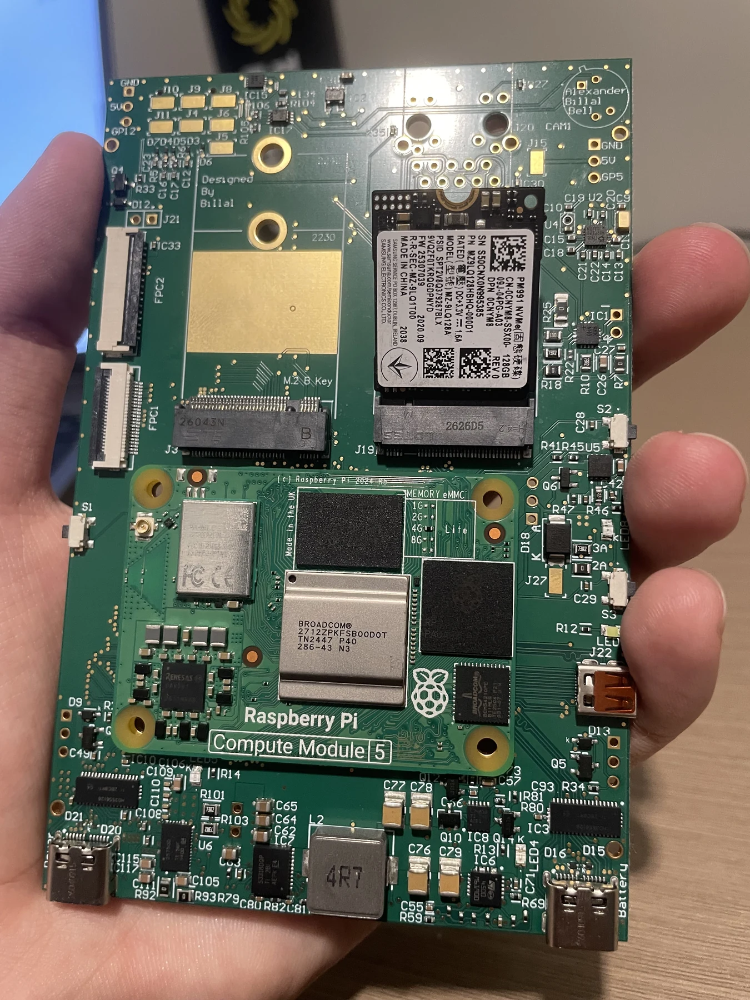
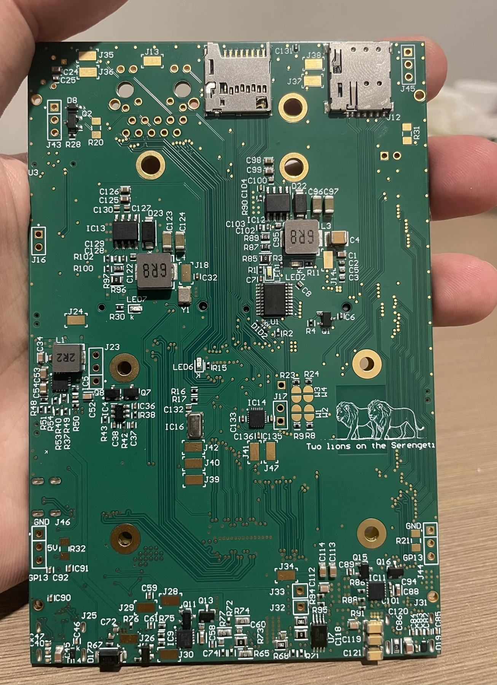

01 / Mixed-signal · High-speed PCB
Custom Phone
A custom CM5-based smartphone PCB bringing cellular, GPS, high-speed interfaces, and power distribution onto a dense six-layer board.
- 6-layer mixed-signal PCB
- USB-C · 5 Gbps
- Ethernet · 1 Gbps
- Power distribution · up to 7 A
Impedance-controlled, length-matched routing for HDMI, Ethernet, MIPI, PCIe, and USB. Power distribution supports loads up to 7 A with ideal-diode protection for charging from multiple ports.
Ongoing · PCB design complete; enclosure and firmware in progress.
View project on GitHub
More images & schematics
